경영지도사-1차-2교시(구) (2019-04-06 기출문제)
1과목: 기업진단론
1. 재무비율 중 동태비율에 해당하는 것은?
- 현금ㆍ예금비율
- 당좌비율
- 자기자본회전율
- 부채비율
- 유동비율
(정답률: 알수없음)

2. 내부주체인 경영자가 경영분석을 수행하는 목적으로 옳지 않은 것은?
- 기업내부의 상황을 통제할 수 있는 업무계획 수립
- 경영전략을 수립하기 위한 정보 수집
- 경쟁기업 분석을 위한 정보 수집
- 자금조달 방법을 위한 정보 수집
- 조세부담의 능력평가 및 거시경제 정책수립
(정답률: 알수없음)
3. 기업을 진단하는 컨설턴트의 자세로 옳지 않은 것은?
- 핵심 문제를 중심으로 해결책을 설정하고 집중 분석한다.
- 임직원과의 소통에 힘쓴다.
- 인터뷰를 통해서도 자료를 수집한다.
- 최소한의 정량적 진단기법을 활용한다.
- 기업체의 경영 및 기술 측면의 문제점을 찾아 개선책을 권고한다.
(정답률: 알수없음)
4. 활동성 비율에 관한 설명으로 옳지 않은 것은?
- 기업이 보유하고 있는 자산을 얼마나 능률적으로 운영하였는지 측정하는 것이다.
- 매출액을 형성하기 위하여 투자된 각종 자산들의 관계를 분석한 것이다.
- 기업의 영업활동에 대한 효율성을 평가하는 비율이다.
- 회전율이 높을수록 유동부채에 대한 매출액이 상대적으로 높다는 것을 의미한다.
- 총자산회전율은 매출액을 총자산으로 나눈 비율이다.
(정답률: 알수없음)
5. 기업체질삼각형 분석에 관한 설명으로 옳지 않은 것은?
- 매출액, 총자산회전율, 투자수익률(ROI)을 삼각형의 3변에 각각 표시하여 삼각형 면적의 변동을 평가한다.
- 기준시점과 비교시점의 체질 상태에 대한 종합적 평가를 할 수 있다.
- 비교시점의 삼각형 크기가 더 큰 면적일수록 양호한 것으로 평가한다.
- 삼각형의 하단 수평변에는 일반적으로 매출액을 표시한다.
- 경영의 질을 종합적으로 나타낼 수 있는 방법이다.
(정답률: 알수없음)
6. 손익분기점 분석에 관한 설명으로 옳지 않은 것은?
- 손익분기점이 높을수록 경영 위험은 낮다고 판단한다.
- 기업의 생산 및 판매활동에서 일정기간의 매출액과 영업비용이 일치하여 손익 제로(zero)상태를 의미한다.
- 판매단가와 단위당 변동비가 일정하다고 할 때, 수익과 비용간의 선형관계를 의미한다.
- 비용ㆍ매출액ㆍ이익간의 관계를 분석하는 것으로 CVP분석이라고도 한다.
- 기업의 설비투자 등으로 고정비 부담이 증가하는 경우 매출액 변동에 따라 이익수준의 변동이 어떻게 나타나는지를 분석할 수 있다.
(정답률: 알수없음)
7. 기업가치를 평가하는 현금흐름할인모형에 관한 설명으로 옳지 않은 것은?
- 기업의 영업활동에 의한 잉여현금흐름으로 기업가치를 평가하는 모형이다.
- 기업이 활용하는 자산으로부터 발생하는 미래현금흐름을 적절한 할인율로 계산한 현재가치로 기업가치를 평가한다.
- 할인율은 자본 출자자 관점에서 기업의 최대수익률이 되며, 기업의 관점에서 보면 자본조달의 대가인 자본수익이 된다.
- 영업현금유입액에서 영업현금유출액을 차감하여 영업활동현금흐름을 구한다.
- 현재가치 측정에 적용되는 할인율은 기업의 가중평균자본비용(WACC)을 사용한다.
(정답률: 알수없음)
8. 제품수명주기 중 성장기에 관한 설명으로 옳은 것은?
- 신제품을 개발하는 단계로 경쟁사도 적고 매출 증가율이 극히 저조하다.
- 시장수요가 포화상태에 이르며 매출성장이 둔화되고 판촉비 등의 증가를 통해 극심한 경쟁을 하게 된다.
- 매출액이 급증하기 시작하고 대량생산에 따른 원가하락으로 수익성이 양호하고 사업 위험성이 적다.
- 수익성이 감소하기 시작하고 유휴설비가 발생하여 경쟁력이 약화된 기업은 서서히 사업 위험성이 커지기 시작한다.
- 판매량과 수익성이 급속히 감소하기 시작한다.
(정답률: 알수없음)
9. (주)산단은 기업의 부실을 판별 예측할 수 있는 재무비율을 발견하기 위하여 일정한 기간 동안 부실기업과 건전기업의 재무비율이 어떻게 변화하는가의 추세를 도표로 작성하려고 한다. 이때 분석해야 하는 기법은?
- 판별분석
- 프로파일(profile) 분석
- 채권평가모형분석
- 추세분석법
- 다변량분석
(정답률: 알수없음)
10. (주)산단의 매출관련 자료이다. 손익분기점 판매량은?
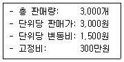
- 1,000개
- 1,500개
- 2,000개
- 2,500개
- 3,000개
(정답률: 알수없음)
11. 포괄손익계산서에 관한 설명으로 옳지 않은 것은?
- 비현금성 항목이 포함된다.
- 매출원가, 판매비와 일반관리비가 포함된다.
- 회계적 이익은 분석대상 기업의 현금흐름을 나타내는 것은 아니다.
- 영업이익이 많으면 기업의 경영성과가 양호함을 의미한다.
- 매출총이익, 영업이익, 경상이익, 이월이익잉여금, 당기순이익 등이 포함된다.
(정답률: 알수없음)
12. 비율분석을 이용한 경영분석에서 각 재무비율 자체만으로 기업의 재무상태나 경영성과에 대한 양호ㆍ불량의 객관적 판단이 어려워 상호 비교할 수 있는 표준비율이 필요하다. 다음 중 표준비율의 종류에 해당되는 것을 모두 고른 것은?
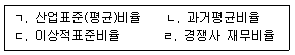
- ㄱ, ㄴ
- ㄴ, ㄹ
- ㄱ, ㄷ, ㄹ
- ㄴ, ㄷ, ㄹ
- ㄱ, ㄴ, ㄷ, ㄹ
(정답률: 알수없음)
13. (주)나무는 2019년 4월 창업하였다. 기업활동을 통해서 달성하고자 하는 목표로 적합하지 않은 것은?
- 기업가치의 극대화
- 기업성장의 극대화
- 이윤 극대화
- 부채 의존도 극대화
- 시장점유율 극대화
(정답률: 알수없음)
14. 기업의 유형에 관한 설명으로 옳지 않은 것은?
- 개인기업은 소유와 경영이 일치한다.
- 합명회사는 2인 이상의 유한책임사원으로만 구성된다.
- 합자회사는 무한책임을 지는 출자자와 유한책임을 지는 출자자로 구성된다.
- 유한회사는 기업채무에 대한 유한책임을 지는 출자자로 구성된다.
- 주식회사는 주주의 유한 책임제도와 주식으로 자본의 증권화를 통하여 자본과 경영이 분리 운영되는 다수공동기업의 형태이다.
(정답률: 알수없음)
15. 기업 신용위험의 결정요인 5C에 해당하지 않는 것은?
- 경영자 인격(Character)
- 상환능력(Capacity)
- 담보력(Collateral)
- 콜 옵션(Call option)
- 경제 여건(Conditions)
(정답률: 알수없음)
16. 영업레버리지도(DOL)의 특성으로 옳지 않은 것은?
- 영업레버리지도가 높다는 것은 기업의 영업이익이 높거나 경영상태가 양호함을 의미한다.
- 고정 영업비용이 없으면 영업레버리지는 발생하지 않는다.
- 영업레버리지는 고정비가 크고 변동비용이 작을수록 크게 작용한다.
- 고정영업비용이 일정할 때에 매출액이 늘어나면 영업레버리지도가 낮아진다.
- 경기가 불황일 때 영업레버리지도가 큰 기업일수록 매출액의 감소에 따른 영업이익 하락 폭이 크다.
(정답률: 알수없음)
17. 현금흐름표의 기능으로 옳지 않은 것은?
- 분석 대상기업의 미래 현금흐름에 관한 정보를 제공한다.
- 기업의 부채상환능력과 배당금 지급능력을 알 수 있다.
- 영업활동에서 발생한 순현금흐름과 당기순이익의 차이 및 그 이유에 관한 정보를 제공한다.
- 현금흐름을 포괄적으로 표시해서 기업 자금흐름을 대략적으로만 볼 수 있다.
- 기업의 투자활동과 재무활동으로 인한 현금흐름을 검토함으로써 일정기간 동안 자산이나 부채의 증감 이유를 파악할 수 있다.
(정답률: 알수없음)
18. 재무적 부실징후로 옳지 않은 것은?
- 기업의 자산 가치가 부채 가치보다 감소
- 과다한 금용비용 발생
- 재고자산의 감소
- 자본잠식의 심화
- 현금ㆍ예금의 지속적 감소
(정답률: 알수없음)
19. 기업의 자본조달비용을 의미하는 가중평균자본비용(WACC) 산출 시 해당되지 않는 것은?
- 자기자본
- 자기자본의 비용
- 타인자본의 비용
- 법인세율
- 유형자산
(정답률: 알수없음)
20. 경영분석의 수행 주체와 분석 목적의 연결이 옳지 않은 것은?
- 금융기관: 제품의 품질과 사후 서비스 분석
- 투자자: 주식이나 채권의 내재가치 또는 위험특성 분석
- 세무당국: 담세능력이나 수익성 분석
- 신용평가기관: 채권등급 평정
- 주주: 수익성과 위험분석
(정답률: 알수없음)
21. 경영분석의 기법에 관한 설명으로 옳은 것은?
- 실수분석은 계산한 재무비율을 표준비율과 비교하여 분석한다.
- 증감분석법은 기간 중에 특정 재무제표 항목이 어느 정도 변동하였는지를 분석한다.
- 지수법은 재무제표상 두 항목의 균형이 이루어져 있는가를 분석한다.
- 균형분석법은 가중평균지수를 계산하여 종합적인 분석을 한다.
- 비율분석은 몇 개의 중요한 비율을 결합하여 종합적인 하나의 지표로 분석한다.
(정답률: 알수없음)
22. 총자본순이익률(ROI)분석법에 관한 설명으로 옳지 않은 것은?
- 기업을 종합적으로 평가할 수 있는 방법으로 미국 듀퐁사에서 개발하였다.
- 매출액순이익률과 총자산회전율을 곱하여 계산한다.
- 장단기 지급능력 등에 대한 분석도 포함한 유용한 분석법이다.
- 수익성을 결정하는 질적 요소나 전략적 요소를 간과할 수 있다.
- 기업의 단기 경영목표를 총자산순이익률의 극대화로 보고 이 목표를 통제하기 위한 분석이다.
(정답률: 알수없음)
23. (주)중기에서 재무분석을 통하여 기업의 재무상태를 판단하고자 할 때 분석 내용에 해당하지 않는 것은?
- 수익성 분석
- 유동성 분석
- 안전성 분석
- 유연성 분석
- 성장성 분석
(정답률: 알수없음)
24. 기업의 유동성 분석에 관한 설명으로 옳은 것은?
- 기업이 장기채무를 변제할 능력이 어느 정도인지를 측정하는 비율이다.
- 현금비율은 유동성비율 중에서 가장 보수적인 비율이다.
- 유동비율은 유동자산을 유동부채로 나눈 비율로 대체로 낮을수록 좋다.
- 유동성 분석을 위한 항목에는 유동비율, 당좌비율, 총자산회전율 등이 존재한다.
- 순운전자본비율은 순운전자본을 유형자산으로 나눈 비율이다.
(정답률: 알수없음)
25. 재무상태표에 관한 설명으로 옳지 않은 것은?
- 일정시점의 기업 재무상태를 나타내는 보고서이다.
- 재무상태표의 대변은 부채와 자본으로 구성된다.
- 재무상태표상의 장부가치와 경제적 실질가치 사이에 차이가 있을 수 있다.
- 재무상태표의 차변은 자본의 조달상황, 대변은 자본의 운용상황을 나타낸다.
- 재무상태표에는 질적 정보와 비계량적 정보가 반영되지 않는다는 단점이 있다.
(정답률: 알수없음)
26. 당좌자산을 유동부채로 나눈 기업의 단기채무지급능력을 평가하는데 유용한 지표는?
- 당좌비율
- 유동비율
- 순운전자본비율
- 현금비율
- 부채비율
(정답률: 알수없음)
27. 토빈의 q 비율에 관한 설명으로 옳은 것은?
- 주식의 시가를 주당순이익으로 나눈 값이다.
- 주식의 시가를 주당장부가치로 나눈 값이다.
- 배당금을 당기순이익으로 나눈 값이다.
- 주당 배당액에서 주식가격을 나눈 값이다.
- 자산의 시장가치를 자산의 대체원가로 나눈 값이다.
(정답률: 알수없음)
28. 자기자본과 비유동부채가 비유동자산에 어느 정도 투입되어 운용되고 있는가를 나타내는 지표는?
- 유동비율
- 비유동비율
- 자기자본비율
- 이자보상비율
- 비유동장기적합률
(정답률: 알수없음)
29. 재무상태표에 포함되지 않는 항목은?
- 자산
- 이자비용
- 자본금
- 이익잉여금
- 매입채무
(정답률: 알수없음)
30. 재무제표를 이용한 비율분석의 한계점이 아닌 것은?
- 경영환경이 빠르게 변화하는 경우에는 분석의 한계가 있다.
- 비교기업 간의 회계처리방법이 다른 경우에는 정확한 정보를 얻기 어렵다.
- 계절적 변동에 따른 영향이 큰 산업은 비율분석이 왜곡될 수 있다.
- 비교기준이 되는 표준비율로 어떤 것을 선택하느냐에 따라 평가가 달라질 수 있다.
- 분석목적에 맞는 다양한 종류의 비율분석이 어렵고, 제3자가 용이하게 얻을 수 있는 자료가 부족하다.
(정답률: 알수없음)
31. 레버리지비율로 조달한 자본 중 타인자본에 대한 의존 정도를 나타내는 것은?
- 매출수익율
- 자산회전율
- 부채비율
- 당좌비율
- 자기자본회전율
(정답률: 알수없음)
32. 경영분석 자료 중 회계자료에 관한 설명으로 옳지 않은 것은?
- 기업은 회계기준에 근거하여 재무제표를 작성하여야 한다.
- 재무상태표는 일정시점의 자산과 부채 및 자본의 내용을 나타내는 재무제표이다.
- 이익잉여금처분계산서는 기업활동에서 발생하는 이익 처분에 관련한 보고서이다.
- 현금흐름표는 기업활동에서 발생하는 현금의 유입과 유출을 영업, 투자, 재무활동으로 분류한 보고서이다.
- 포괄손익계산서는 기업활동에서 일정시점의 경영노력의 결과를 수익, 비용, 이익의 관계로 체계적으로 제시한 보고서이다.
(정답률: 알수없음)
33. 경영분석에서 활용하는 비회계적 자료가 아닌 것은?
- 인력현황
- 포괄손익계산서
- 시장점유율
- 노사관계
- 주식가격과 거래량
(정답률: 알수없음)
34. 주가현금흐름비율(PCR)에 관한 설명으로 옳은 것은?
- 주가현금흐름비율이 낮은 주식이 일반적으로 투자대상으로 적절하다.
- 1주당 매출액의 몇 배가 주가로 평가되는지를 보여준다.
- 주가현금흐름비율이 높을수록 보유한 현금에 비해 주가가 낮은 것으로 해석된다.
- 대체적으로 주가가 일정하다면 주가현금흐름비율이 주가수익비율보다 높게 나타난다.
- 기업의 당기순이익 중 배당금으로 지급되는 부분의 비율을 말한다.
(정답률: 알수없음)
35. 경제적 부가가치(EVA)에 관한 설명으로 옳지 않은 것은?
- EVA의 측정은 영업이익에서 총자본비용을 차감한 것이다.
- EVA가 양(+)의 값이면 효과적인 경영을 하였다는 것을 의미한다.
- 수익성이 높은 부문에 투자를 유도하고 생산성 향상에 기여한다.
- EVA를 강조할 경우 경영자들은 단기성과를 추구하는 경향이 있다.
- EVA를 증가시키려면 자본비용을 낮추어야 하고 적절한 재무구조를 유지하여야 한다.
(정답률: 알수없음)
36. 주가를 주당순자산(장부가치)으로 나눈 비율은?
- PBR
- PER
- PSR
- ROE
- ROA
(정답률: 알수없음)
37. 물가상승이 재무비율에 미치는 영향에 관한 설명으로 옳은 것을 모두 고른 것은?
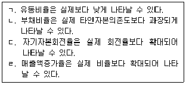
- ㄱ, ㄴ
- ㄷ, ㄹ
- ㄱ, ㄴ, ㄹ
- ㄴ, ㄷ, ㄹ
- ㄱ, ㄴ, ㄷ, ㄹ
(정답률: 알수없음)
38. (주)중기의 2018년도 영업이익은 200억원, 당기순이익은 100억원이다. 총자산영업이익률(ROA)이 0.1이고 자기자본순이익률(ROE)이 0.2일 때, (주)중기의 타인자본은 얼마인가?
- 400억원
- 500억원
- 800억원
- 1,500억원
- 2,000억원
(정답률: 알수없음)
39. (주)중기는 외국인 관광객 대상으로 화장품을 판매하고 있다. 전 세계적인 한류의 확산으로 (주)중기의 화장품 판매매출이 10% 증가하게 되고, 이에 따른 영업이익이 30% 증가할 것으로 기대하고 있다. (주)중기의 영업레버리지도(DOL)는?
- 1
- 2
- 3
- 4
- 5
(정답률: 알수없음)
40. (주)중기의 회계자료가 다음과 같을 때 노동생산성은?
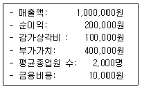
- 100원
- 200원
- 250원
- 400원
- 500원
(정답률: 알수없음)
2과목: 조사방법론
41. 자료수집방법 중 실험법에 관한 설명으로 옳은 것을 모두 고른 것은?
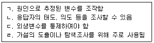
- ㄱ, ㄴ
- ㄱ, ㄷ
- ㄱ, ㄹ
- ㄴ, ㄷ
- ㄷ, ㄹ
(정답률: 알수없음)
42. 연구의 과정이나 방법이 분명하게 정리되어, 동일한 절차를 반복하면 동일한 결과를 얻을 수 있어야 한다는 과학적 연구의 특징은?
- 객관성
- 재현가능성
- 검증가능성
- 경험성
- 비주관성
(정답률: 알수없음)
43. 면접조사 과정 중 프로빙(probing)을 구사하는 방법으로 옳지 않은 것은?
- 간단한 찬성적인 응답
- 무언의 암시에 의한 자극
- 명확한 대답의 요구
- 비지시적 질문의 사용
- 의견이나 행동의 이유를 질문
(정답률: 알수없음)
44. 서베이 자료수집 방법들의 특성을 상대적으로 비교한 표이다. ( ㄱ ) ∼ ( ㄹ )에 들어갈 단어를 순서대로 바르게 나열한 것은?
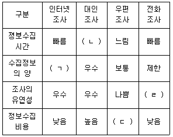
- ㄱ: 보통, ㄴ: 느림, ㄷ: 낮음, ㄹ: 낮음
- ㄱ: 우수, ㄴ: 느림, ㄷ: 낮음, ㄹ: 보통
- ㄱ: 우수, ㄴ: 빠름, ㄷ: 보통, ㄹ: 낮음
- ㄱ: 보통, ㄴ: 느림, ㄷ: 보통, ㄹ: 보통
- ㄱ: 우수, ㄴ: 빠름, ㄷ: 낮음, ㄹ: 낮음
(정답률: 알수없음)
45. 다음 설명에 모두 해당하는 실험설계 방법은?
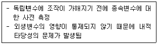
- 집단비교설계
- 단일집단 사후 측정설계
- 솔로몬 4집단 설계
- 통제집단 사후 측정설계
- 단일집단 사전사후 측정설계
(정답률: 알수없음)
46. 패널조사에 관한 설명으로 옳지 않은 것은?
- 실제 구매행동이 아닌 구매의도에 관한 자료이다.
- 패널 구성원들이 표본 대표성을 결여할 수 있다.
- 패널 구성원들이 이사 혹은 기타 이유로 패널에서 이탈할 수 있다.
- 원래 정해진 응답자가 아닌 다른 응답자가 응답할 수 있다.
- 사실대로 응답하지 않고 사회적으로 바람직한 방식으로 응답할 수 있다.
(정답률: 알수없음)
47. 두 변수 간의 사실적 관계를 통제하여 밝힐 수 있는 변수로서 진짜 관계가 무차수준에서 나타나는 것을 방해하는 검증변수는?
- 억제변수
- 조절변수
- 왜곡변수
- 잠재변수
- 매개변수
(정답률: 알수없음)
48. 탐색적 조사방법에 해당하지 않는 것은?
- 표적집단면접법
- 전문가의견조사
- 문헌연구
- 사례조사
- 패널조사
(정답률: 알수없음)
49. A사는 최근 마케팅 부서에 고객서비스 만족도를 향상시키기 위하여 20여명의 신규직원을 추가로 마케팅 부서에 충원하였다. 한편, 고객서비스 만족도 향상을 위해 사은품 증정프로모션을 함께 실시하였다. 이 때 사은품 증정 프로모션의 변수 유형은?
- 억제변수
- 왜곡변수
- 이산변수
- 외생변수
- 조절변수
(정답률: 알수없음)
50. 실험설계의 종류에 관한 다음 표의 (ㄱ) ∼ (ㄷ)에 들어갈 단어를 순서대로 바르게 나열한 것은?
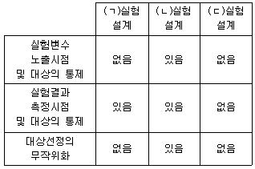
- ㄱ: 원시, ㄴ: 순수, ㄷ: 유사
- ㄱ: 순수, ㄴ: 원시, ㄷ: 유사
- ㄱ: 유사, ㄴ: 순수, ㄷ: 원시
- ㄱ: 유사, ㄴ: 원시, ㄷ: 순수
- ㄱ: 원시, ㄴ: 유사, ㄷ: 순수
(정답률: 알수없음)
51. 비표준화면접에 관한 설명으로 옳은 것을 모두 고른 것은?
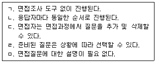
- ㄱ, ㄷ
- ㄱ, ㄹ
- ㄴ, ㄷ
- ㄴ, ㄹ
- ㄹ, ㅁ
(정답률: 알수없음)
52. 타당도를 높일 수 있는 방법으로 옳지 않은 것은?
- 측정개념에 대한 정확한 이해를 통해 구체적이고 정확한 조작적 정의를 하고, 이에 맞는 측정항목을 개발한다.
- 신뢰성이 높은 측정문항을 사용한다.
- 선행연구를 통해 실효성이 검증된 측정도구를 사용한다.
- 한 가지 방법보다는 두 개 이상의 방법으로 측정한다.
- 측정개념을 위한 용어를 정확하게 사용하고 응답자들에게 용어에 대한 개념을 정확하게 이해시킨다.
(정답률: 알수없음)
53. 상관분석에 관한 설명으로 옳지 않은 것은?
- 상관계수의 절댓값의 크기는 변수들 간의 선형관계 정도를 나타낸다.
- 상관계수는 -1에서 +1사이의 값을 가진다.
- 상관계수의 값이 0.8 이상이거나 -0.8 이하이면 매우 높은 상관관계를 나타낸다.
- 두 변수의 값에 양의 상수를 곱하면 상관계수가 변한다.
- 산포도에서 한 변수가 증가함에 따라 다른 한 변수의 값이 감소하면 상관계수가 음의 상관관계이다.
(정답률: 알수없음)
54. 조사의 신뢰성을 향상시키는 방법으로 옳지 않은 것은?
- 체계적 오차를 제거한다.
- 측정항목의 모호성을 제거한다.
- 측정항목의 수를 늘린다.
- 응답자가 모르는 내용은 측정하지 않는다.
- 검증된 측정방법을 사용한다.
(정답률: 알수없음)
55. 신뢰도를 측정하는 방법으로 옳지 않은 것은?
- 유사양식법
- 대체법
- 반분법
- 내적일관성
- 상호배타성
(정답률: 알수없음)
56. 측정의 타당도는 낮은 반면에 신뢰도는 높은 경우에 해당하는 측정오차에 관한 설명으로 옳은 것은?
- 체계적 오차는 작은 반면에 무작위 오차는 크다.
- 체계적 오차와 무작위 오차 모두 작다.
- 체계적 오차와 무작위 오차 모두 크다.
- 체계적 오차는 큰 반면에 무작위 오차는 작다.
- 체계적 오차와 무작위 오차의 크고 작음을 판단할 수 없다.
(정답률: 알수없음)
57. n개 항목의 내적 일관성을 구하는 크론바흐 알파(Cronbach’s alpha)를 계산하는 공식이다. (ㄱ)에 해당하는 것은??
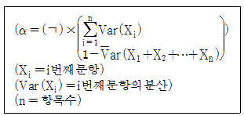
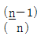
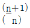
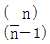
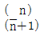
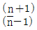
(정답률: 알수없음)
58. 시장조사 시 발생할 수 있는 윤리적 문제에 관한 설명으로 옳지 않은 것은?
- 조사내용은 통계법에 의해 지정된 통계 목적 이외에 사용하지 못하도록 규정되어 있다.
- 소비자 실험 시 기업의 실무자들이 면접의 진행과정을 일방거울을 통해 지켜본다면 이 경우 반드시 참석자들에게 해당사실에 대해 알려주어야 한다.
- 부작용을 일으킬 수 있는 제품에 대한 제품테스트를 진행하는 경우 응답자들에게 발생가능한 문제점을 반드시 설명해 주어야 한다.
- 조사회사는 한 업종에서 한 업체의 조사만을 실시하는 것이 원칙이나 두 개의 업체에 대한 조사를 실시한다면 특정부서가 전담하도록 해야 한다.
- 시장조사를 의뢰하는 경우 계약 이외의 것을 요구하는 행동은 바람직하지 못하다.
(정답률: 알수없음)
59. 보고서 작성에 관한 설명으로 옳지 않은 것은?
- 특정조사 업무 내용 및 결과를 의사결정자에게 보고하기 위한 문서이다.
- 응답자로부터 수집된 자료에 대해 분석과 해석을 통해 문제해결 관련 정보를 제시하여야 한다.
- 보고서의 신뢰성을 검증하기 위해 가능한 조사과정에서 발생된 세부사항들을 모두 포함시켜야 한다.
- 조사의 전반적 과정과 결과를 명확하게 제시하여야 한다.
- 현황분석을 통하여 연구자의 주장을 직ㆍ간접적으로 증명할 수 있어야 한다.
(정답률: 알수없음)
60. A사의 마케팅 담당자는 자사 제품의 디자인만족도가 고객충성도에 미치는 영향이 브랜드 인지도에 따라 상이한 효과가 있는지 실증분석하고자 한다. 이 때 브랜드 인지도의 변수 유형은?
- 매개변수
- 억제변수
- 왜곡변수
- 외생변수
- 조절변수
(정답률: 알수없음)
61. 가설 설정 시 좋은 가설이 갖춰야 할 조건에 해당하는 것을 모두 고른 것은?
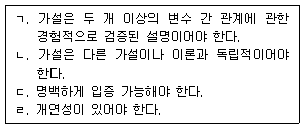
- ㄱ, ㄴ
- ㄴ, ㄷ
- ㄷ, ㄹ
- ㄱ, ㄷ, ㄹ
- ㄴ, ㄷ, ㄹ
(정답률: 알수없음)
62. K 프랜차이즈 본부에서 가맹점의 매출 성과에 미치는 영향 요인을 심층적으로 분석하기 위해 실적이 우수한 가맹점과 저조한 가맹점을 각각 3개씩 선정하여 가맹점주와 면담, 매장 관찰, 매출 자료 분석을 하였다. 이에 해당하는 조사방법은?
- 표적집단면접조사
- 사례조사
- 전문가조사
- 종단조사
- 델파이조사
(정답률: 알수없음)
63. A그룹은 다음 올림픽경기에 공식 후원업체로 참여하기로 결정을 하였다. 그룹 마케팅 부서에서는 올림픽경기 공식후원이 기업 선호도에 미치는 영향을 분석하기 위해 올림픽 개최 전에 기업선호도 조사를 실시하고, 올림픽 경기가 종료된 후 기업선호도 조사를 다시 실시하기로 하였다. 이에 적합한 방법은?
- 문헌조사
- 순수실험연구
- 사례조사
- 횡단연구
- 종단연구
(정답률: 알수없음)
64. 설문지 작성에 관한 설명으로 옳지 않은 것은?
- 두 가지 내용을 하나의 질문에 포함시키지 않는다.
- 특정 상황을 조사자 임의로 가정하지 않는다.
- 전문용어를 사용함으로써 질문의 의도가 분명히 전달될 수 있도록 한다.
- 유도적인 표현은 피한다.
- 선택형 질문의 경우 가능한 모든 응답을 제시한다.
(정답률: 알수없음)
65. 척도개발 시 척도점의 수에 관한 설명으로 옳지 않은 것은?
- 척도점의 수가 많을수록 분산은 커진다.
- 홀수점 척도에서 가운데 점에 응답한 응답자가 많으면 자료의 가치가 떨어진다.
- 척도점의 수를 늘려 측정의 정밀성을 높일 수 있다.
- 짝수점 척도는 의도와 다른 응답을 강요할 수 있다.
- 중립적 응답이 필요한 경우 척도점의 수를 늘린 짝수점 척도를 사용한다.
(정답률: 알수없음)
66. 어의차이(semantic differential) 척도의 형태는?
- 이분형
- 개방형
- 평정형
- 체크리스트형
- 다항선택형
(정답률: 알수없음)
67. 계란을 측정한 척도의 종류로 옳게 짝지어진 것은?
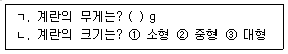
- ㄱ: 등간척도, ㄴ: 서열척도
- ㄱ: 서열척도, ㄴ: 등간척도
- ㄱ: 비율척도, ㄴ: 등간척도
- ㄱ: 비율척도, ㄴ: 서열척도
- ㄱ: 등간척도, ㄴ: 명목척도
(정답률: 알수없음)
68. 층화표본추출(stratified sampling)과 할당표본추출(quota sampling)에 관한 설명으로 옳은 것은?
- 층화표본추출과 할당표본추출 모두 확률표본추출에 해당한다.
- 층화표본추출은 연구자가 이미 가지고 있는 모집단에 대한 정보에 따라 소집단의 크기에 비례하여 편의 표본추출한다.
- 할당표본추출은 집단별로 골고루 표본을 추출하므로 단순 무작위 표본보다 대표성과 일반화 가능성이 크다.
- 표본크기가 동일할 경우 층화표본추출이 비층화표본추출에 비해 정확한 추정량을 얻을 수 있다.
- 대규모 조사연구에서는 층화표본추출을 사용하면 군집표본추출을 사용할 때 보다 시간과 비용을 줄일 수 있다.
(정답률: 알수없음)
69. A지역의 정치성향을 알기 위한 조사연구를 실행하고자 한다. 표본추출과정 중 ( ㄱ )단계에서 발생하는 의사결정의 예로 적절한 것은?
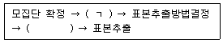
- 어떤 연령대를 대상으로 선정할 것인지 결정한다.
- 지역 주민센터의 주민등록명부를 활용하여 표본추출틀을 결정한다.
- 전수조사가 어려우니 연령별 할당표본추출법을 사용하기로 결정한다.
- 신뢰도와 표본의 수를 결정한다.
- 설문지 내용을 결정하고 설문을 시행한다.
(정답률: 알수없음)
70. 이주 노동자들의 생활실태를 확인하기 위해 그들이 자주 찾는 식료품 가게를 찾아 이주노동자들을 대상으로 조사하고, 응답자들에게 동료 이주 노동자들을 소개 받아 조사를 할 때 사용한 표본추출방법은?
- 할당표본추출법
- 단순무작위표본추출법
- 눈덩이표본추출법
- 판단표본추출법
- 층화표본추출법
(정답률: 알수없음)
71. 95 % 신뢰구간에서 오차 ± 5 % 이내로 연구를 하고자 한다. 과거 조사결과에 따르면 모집단의 표준편차는 15인 것으로 알려져 있다. 이때 필요한 최소 표본의 수는? (단, 95 % 신뢰구간의 Z값은 1.96임)
- 34
- 35
- 36
- 37
- 38
(정답률: 알수없음)
72. 표본오차 추정이 불가능하고 표본분석 결과의 일반화에 제약이 따르는 표본추출방법은?
- 군집표본추출법
- 층화표본추출법
- 할당표본추출법
- 체계적표본추출법
- 단순무작위표본추출법
(정답률: 알수없음)
73. 다음 설명에 해당하는 표본추출방법은?
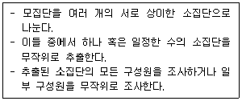
- 군집표본추출법
- 할당표본추출법
- 판단표본추출법
- 편의표본추출법
- 체계적표본추출법
(정답률: 알수없음)
74. 다음은 가설검증에 관한 설명이다. ( ㄱ ) ∼ ( ㄷ ) 에 들어갈 단어를 순서대로 바르게 나열한 것은?
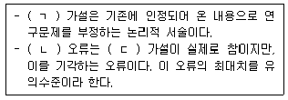
- ㄱ: 귀무, ㄴ: 제1종, ㄷ: 귀무
- ㄱ: 귀무, ㄴ: 제2종, ㄷ: 대립
- ㄱ: 대립, ㄴ: 제1종, ㄷ: 대립
- ㄱ: 대립, ㄴ: 제1종, ㄷ: 귀무
- ㄱ: 귀무, ㄴ: 제2종, ㄷ: 귀무
(정답률: 알수없음)
75. 로봇 청소기를 판매하는 A사는 최근 미세먼지까지 걸러낼 수 있는 시제품 X를 개발하였다. A사가 X제품의 판매결정을 하기 위해 소비자를 대상으로 마케팅믹스 프로그램을 활용한 마케팅 조사를 실시하여 얻을 수 있는 내용으로 옳지 않은 것은?
- 지불가격의 적정성에 대한 소비자 요구를 파악할 수 있다.
- 소비자들이 구매에 소요하는 시간과 구매 편의성에 부여하는 가치를 파악할 수 있다.
- 광고 목표를 결정하는데 도움이 될 수 있다.
- 라이프스타일을 고려한 소비자의 구매패턴을 파악할 수 있다.
- 타겟소비자가 제품으로부터 기대하는 편익이 무엇인지 파악할 수 있다.
(정답률: 알수없음)
76. 대학생들의 핵심역량을 연구하기 위해 신입생 표본을 미리 선정하여 졸업 시까지 매년 반복하여 조사를 하는 방법은?
- 패널조사
- 코호트조사
- 추세조사
- 횡단조사
- 인과조사
(정답률: 알수없음)
77. 척도에 관한 설명으로 옳지 않은 것은?
- 연구대상을 분류하는 명목척도는 상호 배타적 특성을 갖는다.
- 서열척도는 연구대상의 차이 정도를 수치로 할당한다.
- 등간척도는 사칙연산 중 일부 연산이 가능하고, 상대적 크기를 비교할 수 있다.
- 비율척도에서 0은 ‘존재하지 않음’의 의미를 갖는다.
- 비율척도는 절대적 크기를 비교할 수 있다.
(정답률: 알수없음)
78. 측정개념의 속성들에 대한 형용사적 표현을 중심으로 양측에 양(+)의 부호와 음(-)의 부호의 숫자로 느낌의 정도를 표시하도록 하는 척도는?
- 스타펠(stapel) 척도
- 어의차이(semantic differential) 척도
- 고정총합(constant sum) 척도
- 서스톤(thurstone) 척도
- 거트만(guttman) 척도
(정답률: 알수없음)
79. 중심극한정리(Central Limit Theorem)에 관한 설명으로 옳지 않은 것은?
- 모집단의 분포가 정규분포이면, 평균의 표본분포 역시 정규분포를 이룬다.
- 평균의 표본분포의 표준편차는 모집단의 표준편차를 표본크기의 제곱근으로 나눈다.
- 표본분포의 평균은 모집단 평균이다.
- 모집단이 정규분포가 아니더라도 표본크기가 증가함에 따라 평균의 표본분포는 정규분포를 이룬다.
- 모집단의 분포가 연속확률 분포인 경우에만 표본크기가 커질수록 표본분포가 정규분포를 이룬다.
(정답률: 알수없음)
80. 다음 설명에 해당하는 통계분석 방법은?
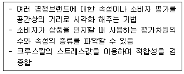
- 컨조인트분석
- 판별분석
- 요인분석
- 다차원척도법
- 군집분석
(정답률: 알수없음)
3과목: 영어
81. 빈 칸에 들어갈 표현으로 적절한 것은?
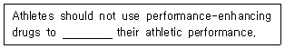
- boost
- hamper
- postpone
- embark
- conceal
(정답률: 알수없음)
82. 밑줄 친 부분과 의미가 가까운 것은?
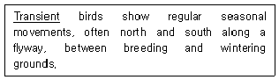
- Extinct
- Migratory
- Endangered
- Exotic
- Predatory
(정답률: 알수없음)
83. 밑줄 친 부분과 의미가 가까운 것은?
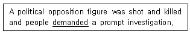
- called for
- turned out
- took up
- put forth
- drew up
(정답률: 알수없음)
84. 빈 칸에 들어갈 표현으로 적절하지 않은 것은?
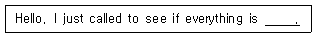
- all right
- fine
- feeling good
- okay
- going well
(정답률: 알수없음)
85. 밑줄 친 부분과 의미가 가까운 것은?
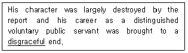
- disreputable
- disheartening
- dissident
- distinctive
- discriminatory
(정답률: 알수없음)
86. 직업에 관한 설명으로 옳지 않은 것은?
- An accountant controls the financial situation of people and companies.
- A carpenter makes things from wood or repairs things made of wood.
- A plumber repairs pipes or water tanks.
- A veterinarian builds walls with bricks.
- A personnel manager is responsible for personnel staff.
(정답률: 알수없음)
87. 밑줄 친 부분 중 어법상 옳지 않은 것은?
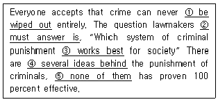
- be wiped out
- must answer is
- works best
- several ideas behind
- none of them
(정답률: 알수없음)
88. 밑줄 친 부분이 어법상 옳은 것은?
- My school is standing on a hill.
- Honesty is a best policy.
- You’d better not to go there.
- I offended by the police officer.
- What a beautiful girl she is!
(정답률: 알수없음)
89. 빈 칸에 들어갈 표현으로 옳은 것은?
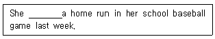
- hits
- is hitting
- hitting
- to hit
- hit
(정답률: 알수없음)
90. 어법상 옳지 않은 것은?
- I found him lying on the sofa.
- Look at that horse jumping.
- I can’t make you going there.
- I heard someone slamming the door.
- I found the seat taken.
(정답률: 알수없음)
91. 밑줄 친 부분 중 어법상 옳지 않은 것은?
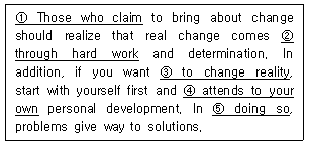
- Those who claim
- through hard work
- to change reality
- attends to your own
- doing so
(정답률: 알수없음)
92. 빈 칸에 들어갈 표현으로 옳은 것은?
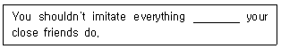
- that
- what
- who
- why
- how
(정답률: 알수없음)
93. 밑줄 친 부분 중 어법상 옳지 않은 것은?
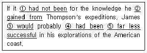
- had not been
- gained from
- would
- had been
- far less successful
(정답률: 알수없음)
94. 빈 칸에 들어갈 표현으로 옳은 것은?
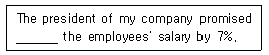
- rising
- to rise
- raising
- to raise
- rose
(정답률: 알수없음)
95. 빈 칸에 들어갈 표현으로 옳은 것은?
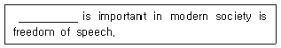
- When
- How
- What
- Where
- Which
(정답률: 알수없음)
96. 어법상 옳지 않은 것은?
- It goes without saying that health is above wealth.
- How about taking a walk along the bank?
- Comparing with his brother, Tom is not so handsome.
- Night coming on, the travellers began to feel hungry.
- I had my purse stolen in the crowded subway.
(정답률: 알수없음)
97. 빈 칸에 들어갈 표현으로 옳은 것은?
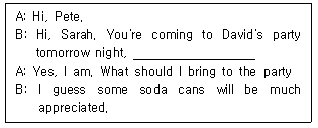
- don't you?
- aren't you?
- won't you?
- haven't you?
- can't you?
(정답률: 알수없음)
98. 빈 칸에 들어갈 표현으로 적절한 것은?
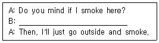
- So do I.
- Not at all.
- No, I don't.
- By no means.
- I'm afraid I do.
(정답률: 알수없음)
99. 대화의 내용이 자연스럽지 않은 것은?
- A: Do you need a hand?
B: No, thanks. I can do it by myself. - A: What is your new boss like?
B: She likes shopping in her free time. - A: In what currency should we make payment?
B: In US dollar. - A: What do you do for a living?
B: I’m a doctor. - A: How did the meeting go?
B: It went very well.
(정답률: 알수없음)
100. 밑줄 친 부분의 의미로 적절한 것은?
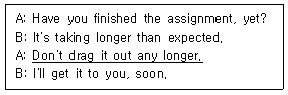
- Take a deep breath.
- Don't mention it.
- Don't be shy.
- Take your time.
- Finish it quickly.
(정답률: 알수없음)
101. 대화문의 ( )에 들어갈 단어를 순서대로 나열한 것은?
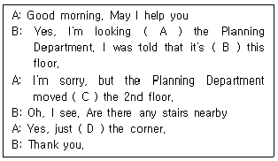
- to - on - to - around
- to - in - on - round
- for - in - to - round
- for - on - to - around
- for - in - on - round
(정답률: 알수없음)
102. 대화의 내용이 자연스럽지 않은 것은?
- A: May I help you?
B: Yes, please. These shoes are the wrong size. - A: Hi, I need to return this camera.
B: O.K. Do you have the receipt? - A: Do you have a green thumb?
B: No, I don't. My favorite color is yellow. - A: What time does the bank close?
B: I’m not sure. At four, I guess. - A: Hi, James. This is Hannah speaking. Can you talk?
B: Well, I’m fixing a door right now. Can I call you back?
(정답률: 알수없음)
103. 빈 칸에 들어갈 표현으로 적절한 것은?
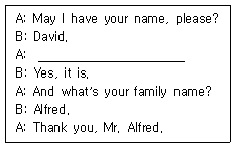
- How are you?
- Is that your first name
- Do you like to travel?
- Can I see your passport, please
- Can I have your phone number, please
(정답률: 알수없음)
104. 대화의 내용이 자연스럽지 않은 것은?
- A: How much is this skirt?
B: It’s only $20. It really goes well with you. - A: Will that be cash or check?
B: Great! I’ll take it. - A: Do you have change for five dollars?
B: Let me check. Yes, I do. - A: Hi, John. What’s up?
B: Not much. - A: Are you okay? You don't look good.
B: I feel dizzy. Thanks for your concern.
(정답률: 알수없음)
1⑤. 밑줄 친 단어를 우리말로 바르게 옮긴 것은?
- 특산품의
- 일반적인
- 전통적인
- 무료의
- 고급의
(정답률: 알수없음)
106. 빈 칸에 들어갈 표현으로 적절한 것은?
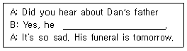
- distinguished himself as a father
- didn't apply himself
- made it himself
- was on cloud nine
- passed away yesterday
(정답률: 알수없음)
107. 영어를 우리말로 옮긴 것으로 적절하지 않은 것은?
- The sooner, the better.
빠를수록 좋아요. - First come, first served.
선착순 - Thanks for the heads-up.
귀띔해줘서 고마워요. - Do you have an appointment?
전할 말씀이 있으신가요 - Do you have anything to declare?
세관 신고할 것 있어요
(정답률: 알수없음)
108. 다음 문장을 영어로 옮긴 것으로 옳은 것은?
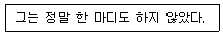
- Not a word did he say.
- He didn’t say nothing.
- He said anything.
- Not a word he never said.
- He did say not a word anything.
(정답률: 알수없음)
109. 빈 칸에 공통으로 들어갈 단어는?
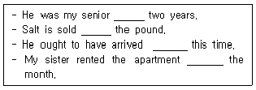
- in
- at
- for
- by
- with
(정답률: 알수없음)
110. 영어를 우리말로 옮긴 것으로 적절하지 않은 것은?
- They painted the town red all night.
그들은 밤새 법석을 떨면서 다녔다. - I feel blue.
나는 우울해요. - I hung on her every word.
나는 그녀 말을 하나도 놓치지 않으려고 귀를 기울였다. - He visited me once in a blue moon.
그는 한 달에 한 번씩 나를 방문했다. - You look under the weather today.
너 오늘 좀 안 좋아 보여.
(정답률: 알수없음)
111. 다음 글의 요지로 적절한 것은?
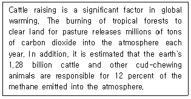
- Cattle are important animals in our lives.
- Raising cattle contributes to global warming.
- The atmosphere is a significant factor in raising cattle.
- Cattle raising is a good way of dealing with global warming.
- Global warming is caused by increased carbon dioxide and methane.
(정답률: 알수없음)
112. 다음 글을 통해 알 수 없는 것은?
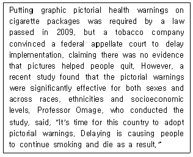
- 담뱃갑 경고 그림에 관한 법이 2009년에 통과되었다.
- 담뱃갑 경고 그림에 관한 법 시행에도 불구하고 담배 판매량은 감소하지 않았다.
- 한 담배 회사는 담뱃갑 경고 그림이 금연에 도움이 된다는 증거가 없다고 주장하였다.
- 최근 한 연구에 따르면 담뱃갑 경고 그림이 남녀에게 모두 효과가 있었다.
- Omage 교수는 담뱃갑 경고 그림과 관련한 연구를 수행했고 경고 그림 시행을 지지하는 입장이다.
(정답률: 알수없음)
113. 글의 흐름으로 보아, 주어진 문장이 들어가기에 적절한 곳은?
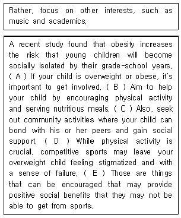
- A
- B
- C
- D
- E
(정답률: 알수없음)
114. 빈 칸에 들어갈 표현으로 적절한 것은?
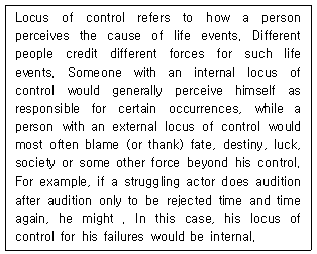
- blame his own lack of ability
- blame his circumstances
- complain that he has a bad luck
- believe that he hasn't been supported by his family
- think that the audition system has something wrong
(정답률: 알수없음)
115. 다음 글의 주제로 적절한 것은?
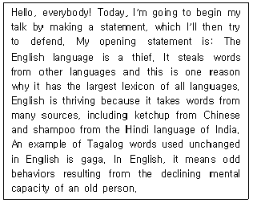
- 영어가 세계어가 될 수 있었던 이유
- 영어에 차용어가 많은 이유
- 영어의 어휘수가 많은 이유
- 영어가 다른 언어들로부터 영향을 받은 이유
- 영어가 다른 언어에 많은 영향을 미치는 이유
(정답률: 알수없음)
116. 빈 칸에 들어갈 표현으로 적절한 것은?
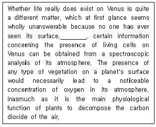
- However
- In addition
- Therefore
- For example
- Similarly
(정답률: 알수없음)
117. 빈 칸에 들어갈 표현으로 적절한 것은?
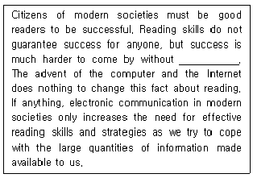
- communication skills
- effective computer skills
- being a skilled reader
- understanding modern societies
- having writing skills
(정답률: 알수없음)
118. 다음 글에서 ‘살기 좋은 도시’의 기준으로 직접 언급되지 않는 것은?
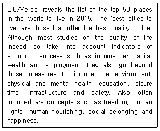
- 1인당 소득
- 여가시간
- 기대수명
- 사회적 연대감
- 인권
(정답률: 알수없음)
119. 빈 칸에 들어갈 표현으로 적절한 것은?
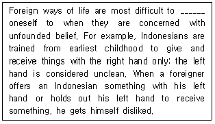
- adopt
- adapt
- adept
- allow
- separate
(정답률: 알수없음)
120. Green Mountain Tea에 관한 설명으로 옳지 않은 것은?
- It is rich in vitamins, compared to other products.
- It is grown and picked in a traditional way.
- It is good for a pain in the stomach.
- It is good to drink when you have a cold.
- It is cheaper than other products on the market.
(정답률: 알수없음)